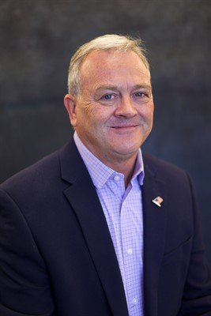
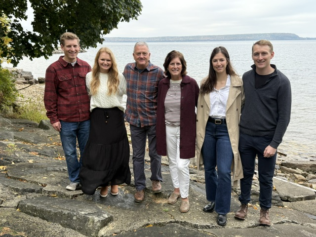

A lifelong Hubbard County resident and former business owner, fighting for fiscal responsibility and a strong voice for local communities.
“Hubbard County is a special place to live, work, raise a family, and enjoy Minnesota's great outdoors. I am seeking re-election to continue protecting our quality of life while ensuring county government remains accountable to taxpayers.”

David De La Hunt was born and raised in Hubbard County. Before joining the County Board, he spent 10 years as a Henrietta Township Supervisor — 8 of them as chairman — learning local government from the ground up. As an electrical engineer and Licensed Professional Engineer, retired status, who owned and operated Normin Broadcasting Corporation for 21 years, he brings a practical, numbers-first approach to county decisions.
His time on the County Board has focused on listening to residents, asking tough questions, and making decisions that balance growth with responsible stewardship of taxpayer resources. He also continues to serve on the Heritage Campus Board, where he helped stabilize operations after the COVID-19 pandemic and return them to positive cash flow.
Public service runs in the family: David's father, Ed De La Hunt, also served as a Hubbard County Commissioner and Henrietta Township Supervisor, and founded the family's broadcasting business back in 1962. It's a tradition of showing up for this community that David is continuing — and that his son Ryan carries forward today as a Captain in the U.S. Air Force.

Taxpayers deserve careful stewardship of their hard-earned dollars. David supports responsible budgeting, efficient government, and essential county services without unnecessary spending. That includes navigating the county's Health & Human Services challenges by advocating strongly to prevent state cost shifts onto local taxpayers. "The purpose of a budget is to budget like you're fully staffed," David has said on the Board — pushing for long-term strategic and capital improvement planning so the county makes decisions with a multi-year view, not just a one-year budget. And as the state pushes unfunded mandates down to local governments, he's been direct about where responsibility lies: "It's not the local governments doing it to you. The screaming needs to be pointed down to St. Paul."
Read David's budget press release →Keeping our communities safe is a core responsibility of county government. David will continue to strongly support the sheriff's office, emergency responders, and public safety personnel — while working with the new Sheriff to reduce and slow the growth of public safety spending. He helped create the Walker Ambulance District so coverage keeps pace with a growing county, and serves on the Association of Minnesota Counties' Public Safety Policy Committee, giving Hubbard County a voice in how public safety policy gets shaped at the state level.
Well-maintained roads, bridges, and infrastructure are vital to our residents, businesses, and visitors. David supports steady, well-planned investment in county roads and infrastructure so residents, farmers, and businesses can count on safe, reliable routes year-round.
A strong local economy benefits everyone. David will continue supporting local businesses, tourism, agriculture, housing development, and entrepreneurship to keep Hubbard County growing and prosperous. Through the County Economic Development Authority and Heartland Lakes Development Commission, including more than $12 million in grant funding secured over the last eight years, he has worked to bring real opportunity to the county — calling the EDA "long term, money well spent" and arguing the county would "more than get your money back" through good planning. That includes tackling housing, which local economic development discussions have called "the 500-pound gorilla" standing in the way of growth, along with support for childcare access, another major barrier keeping local employers from growing.
Hubbard County's lakes, forests, parks, and rural character make this a special place to live and raise a family. David will work to preserve these assets while supporting responsible growth and development. As board chair, he led the effort to develop balanced short-term rental regulations, saying plainly the goal was "to protect all lake property owners" — not to punish anyone. He's also backed the Deep Lake Park development, working directly with state legislators on funding for its next phase — proof that growth and conservation don't have to be at odds. And he's pushed the DNR to keep our seasonal economy in mind: "We lost our fishing derby. You take our snowmobile race away, or if we have a winter where there's no snow or ice, it's devastating," he told the agency in 2026 — a reminder that in Hubbard County, protecting the outdoors and protecting local livelihoods go hand in hand.
Good government starts with listening. David believes elected officials should be accessible, approachable, and responsive to the people they serve. Whether we agree or disagree, every resident deserves to be heard — and every tax dollar deserves to be treated with respect.
Vote in the general election for Hubbard County Commissioner, District 1.
Find Your Polling PlaceIn-person absentee ballots are available 46 days before the general election.
Early Voting InfoMinnesota's Early Voting process lets voters place their ballot directly into a ballot counter before Election Day.
Register to Vote